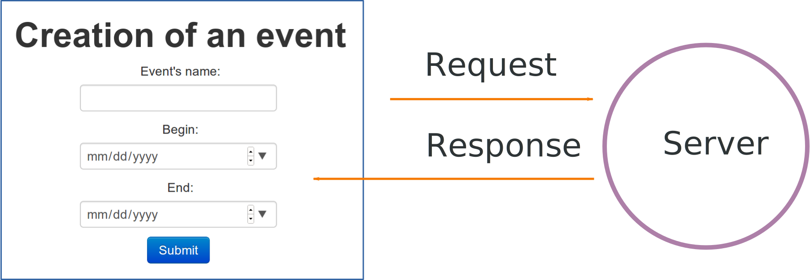
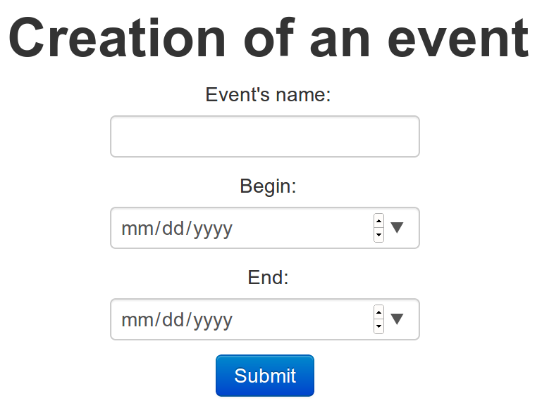

AJAX & REST
HTML is a tree of elements
Element syntax:
<tag>...</tag>
or <tag/>
Tags can have attributes:
<tag attr1="val"
attr2="val" ...>
- Points lost on unclosed tags (mind the slash)
- Two types: read doc to find which apply
- Attributes syntax matters
Cascading Style Sheets (CSS) apply style to elements
Numerous CSS selectors:
tag, class, id,
ancestry, and some others
h1 { ... }
.checked { background: orange; }
#specialDiv { ... }
#main header .subtitle
{ ... }
Some errors in your assignment
tbody is not tbody th
Some properties are not inherited
(see the docs to find out which)
[type="submit"]missing tag name
input[type="submit"] is correct
See devdocs for inherited flag
A great solution
function getDayElement(slot) {
return slot.parentNode.querySelector('th');
}
Query selection works on any element, which acts as the root of
its subtree
JavaScript lets you do what CSS can't
Traverse & manipulate the DOM:
$('ul li').remove();
React to user actions via events
$('p').addEventListener(eventName, callback)
Full-featured programming language with Java syntax
AJAX
Asynchronous JavaScript And XML
JSON rather than XML
Asynchronous requests
Concept: send and receive messages in the background
What for?
- non-blocking interaction
- minimize bandwidth usage
- Browser block by default
- JSON smaller than HTML
Applications
- GMail
- Facebook
- Battlefield's Battlelog
- many others ...
Maybe it doesn't surprise you anymore
AJAX allows you to update parts of a webpage
in the background

JSON (JavaScript Objet Notation) format
{
"events": [
{
"name": "Event A",
"begin": "2013-10-18 18:00:00",
"end": "2013-10-19 6:00:00"
},
{
"name": "Event B",
"begin": "2013-10-23 18:00:00",
"end": "2013-10-23 19:00:00"
}
],
"length": 2
}
- It's just JavaScript! (with quotes)
- Object, Arrays, Strings, Numbers, Booleans
- Can use XML, but JSON simpler
How do you send a request?
XMLHTTPRequest
Or using jQuery:
jQuery.ajax(url);
Example:
jQuery.ajax('/application/events_json');
$.ajax('/application/events_json');
- XHR is the underlying mechanism
- jQuery is much friendlier
- settings object for other verbs
How do you receive the response?
$.ajax(url).done(callback);
function callback(data) {
// do something with data
}
The callback is called when
the request succeeds, with
optional response data
What you can do with it
- Auto-refresh of events on index page
- Background creation of new event
- ...
Keep in mind
- Every user action can happen in the background
- Preserve a smooth user experience
- Look at examples (Github, GMail, GMaps, ...)
What I did not tell you
- Error handling
jQuery.ajax(url).fail(errorCallback);
- Cross-Origin requests
- Accessibility concerns (ARIA)
- What happens if the request fails?
- Screen readers, breaking usability patterns
Your turn!
Write an auto-refresh version of the index page
Show index page example
REST
Representational State Transfer
Websites are made for humans

REST APIs are made for programs
POST /api/events
{
"name" : "Event",
"begin" : "2000-10-10", "end" : "2000-10-10"
}
Defined
by Roy Fielding in 2000
Use HTTP verbs on URIs
GET /events lists all eventsGET /events/12 retrieve a specific eventPOST /events
create a new eventPUT /events/12
update a specific eventDELETE /events/12
delete a specific event
Use HTTP status codes
200 OK201 Created400 Bad Request404 Not Found405 Method Not Allowed
and others
Best practices are fuzzy
This post
post by Vinay Sahni is a good overview
Look at influent examples
Back to Play!
Put API.java into app/controllers/
Configure verbs in the conf/routes file to link
requests to methods
GET /api/v1/events API.events
How to link verbs to methods in controller
FIN
Now go and build great modern web apps
One more thing...
- eval will be around half HTML/CSS/JS/AJAX/REST
- JS course will focus on the language